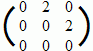
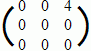
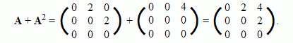
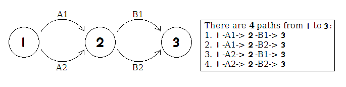

|
Problem B : Power of Matrix |
|
Time limit: 10 seconds |
Consider an n-by-n matrix A. We define Ak = A * A * ... * A (k times). Here, * denotes the usual matrix multiplication.
You are to write a program that computes the matrix A + A2 + A3 + ... + Ak.
Suppose A = . Then A2 = = , thus:

Such computation has various applications. For instance, the above example actually counts all the paths in the following graph:

Input consists of no more than 20 test cases. The first line for each case contains two positive integers n (≤ 40) and k (≤ 1000000). This is followed by n lines, each containing n non-negative integers, giving the matrix A.
Input is terminated by a case where n = 0. This case need NOT be processed.
For each case, your program should compute the matrix A + A2 + A3 + ... + Ak. Since the values may be very large, you only need to print their last digit. Print a blank line after each case.
3 2 0 2 0 0 0 2 0 0 0 0 0
0 2 4 0 0 2 0 0 0